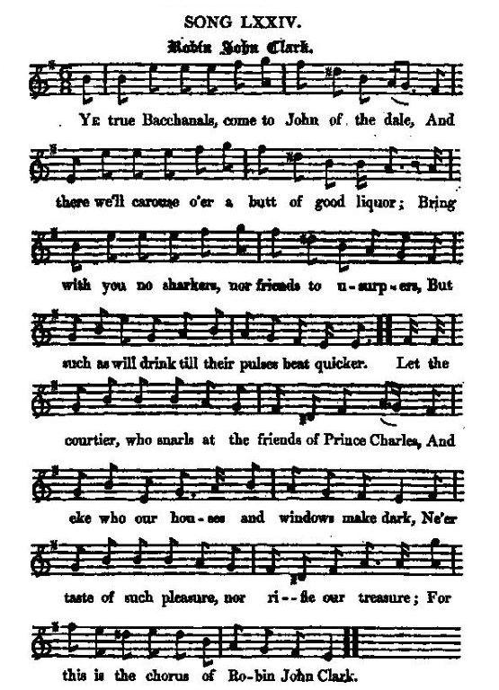

Robin John Clark
Bacchanalian song against George II
Chant bachique contre George II
Tune - Mélodie
"Robin John Clark"
from Hogg's "Jacobite Reliques" , volume 1, N°74, 1819
Sequenced by Christian Souchon

|
To the tune
"This song I got in the same (Young Dalguise's) collection. It is a good song, with an appropriate tune. But though I found them in an old Highland MS, neither of them have anything characteristic of Scotland. I am disposed to think both are English." James Hogg in "Jacobite Relics". More about "bachanalian songs": click here |
A propos de la mélodie
"J'ai trouvé ce chant dans la même collection (celle de M. Dalguise Junior). C'est une bonne chanson avec une mélodie bien appropriée. Mais, bien qu'issues d'un manuscrit des Highlands, ni l'une ni l'autre ne sont vraiment écossaises. Je les croirais volontiers anglaises." James Hogg dans "Jacobite Relics". Pour des détails sur les "chants bachiques": cliquer ici . |

|
ROBIN JOHN CLARK
1. Ye true Bacchanals, come to John of the dale, And there we'll carouse o'er a butt of good liquor; Bring with you no sharkers, nor friends to usurpers, But such as will drink till their pulses beat quicker. Let the courtier, who snarls at the friends of Prince Charles, And eke who our houses and windows make dark, Ne'er taste of such pleasure, nor rifle our treasure; For this is the chorus of Robin John Clark. 2. Let each bung his eye till the vessel's quite dry, And drink to the lowering extravagant taxes; The spirit of Britain, by foreigners spit on, Quite low by oppression and tyranny waxes. Then take off the toast, though the battle be lost, And he that refuses, a traitor we'll mark: Success to our prince, our rightful true prince ; For this is the chorus of Robin John Clark. 3. To the brave duke, his brother, we'll fill up another, Not meaning that blood-thirsty cruel assassin; May the Scots partizans recollect their foul stains, Their force twenty thousand in number surpassing. May they enter Whitehall, St James's and all, While for safety the troops are encamp'd in Hyde Park ; And Heaven inspire each volley of fire. Success to the chorus of Robin John Clark ! 4. Hand in hand let us join against such as combine And -strive to enslave us by vile usurpation; Whenever time offers we'll open our coffers, And strive to relieve the bad state of the nation. We'll not only drink, but we'll act as we think; We'll take up the musket, the broad-sword, and durk; Through all sorts of weather we'll trudge it together, And conquer or die with old Robin John Clark. Source: "The Jacobite Relics of Scotland, being the Songs, Airs and Legends of the Adherents to the House of Stuart" collected by James Hogg, published in Edinburgh by William Blackwood in 1819. |
ROBIN JOHN CLARK
1. Bacchus et Cybèle, chez John vous appellent: Au nectar de ce fût, venez faire honneur! Et que nul rebelle à vous ne se mêle! Nul usurpateur; que d'honnêtes buveurs! Quiconque cancane ou de Charles ricane, Imposant le couvre-feu dans nos foyers, Au jus de la treille, admirable merveille, Gens de Robin John Clark, ne goûte jamais! 2. Que tous dans la troupe assèchent leur coupe! Que soient abaissées ces taxes inouïes! Albion, ton courage a subi l'outrage, Qu'il renaisse des cendres tel le phénix! Malgré la bataille perdue, la futaille Sera vidée. Seul un traître y manquerait. Pour que notre Prince l'Allemand évince, Troupe de Robin John Clark, à sa santé! 3. Au Duc son frère, nous levons nos verres, Non, bien sûr, au sanguinaire boucher, Vainqueur de l'Ecosse en rameutant des forces Supérieures en nombre de vingt milliers! Qu'à Whitehall pénêtrent, à Saint James peut-être Et qu'à Hyde Park les clans installent leurs camps! Que le Ciel inspire les salves qu'ils tirent! Troupe de Robin John Clark, buvons gaiement! 4. Soyons unis tout comme ces sous-hommes Qui nous asservissent dans l'usurpation! Si l'occasion s'offre, ouvrons grands nos coffres, Contribuons à relever notre nation. Oui mais fini de boire, il n'est méritoire Que d'agir avec mousquet, broad-sword et dirk Bravons la tempête, nous n'avons en tête Que vaincre ou mourir avec Robin John Clark. (Trad. Christian Souchon(c)2010) |